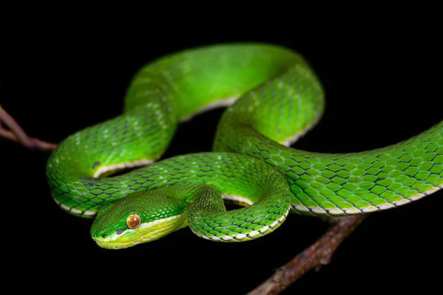

爬行动物 · 动物界
白唇竹叶青 Trimeresurus albolabris

中国南方与东南亚的树栖毒蛇，上唇呈白色、身体翠绿，常在夜间捕食，被咬后肿痛，须立即就医，应远离枝叶间的个体。
- 分类
- 门脊索动物门纲爬行纲目有鳞目科蝰科属竹叶青属
- 栖息环境
- 森林、灌丛、竹丛、农田边缘与树冠层
- 地理分布
- 中国南方多省区及东南亚部分地区
- 保护级别
- IUCN 无危（LC）；中国未列入国家重点保护名录
物种志
白唇竹叶青体长 60–90 厘米，身体细长，头部呈三角形，吻端略尖，上唇鳞片呈白色或淡黄色，“白唇”之名由此而来；通体呈鲜绿色，腹部淡绿或黄绿色，尾端常带红褐色。它的体色与树叶相近，是典型的伪装色。
它分布于中国南方以及东南亚地区，栖息于森林、灌丛、竹丛和农田边缘，树栖，多在夜间活动，捕食鼠类、蛙类、蜥蜴和鸟类。它是卵胎生蛇类，雌蛇妊娠约 5–6 个月后产下 5–15 条幼蛇。白唇竹叶青毒性较强，被咬后局部会迅速肿胀、疼痛，须立即就医；它主要在夜间活动，白天常盘在枝叶间休息，野外活动时要注意观察树枝和灌木，避免惊扰。
形态与习性
- 食性鼠类、蛙类、蜥蜴和鸟类
- 体长60–90 cm
- 寿命约 10–15 年
- 繁殖卵胎生，妊娠 5–6 个月，每胎 5–15 条
- 活动节律夜间活动，白天盘伏在枝叶间
- 毒性毒性较强，被咬后肿痛，须立即就医
趣味知识
- 白唇竹叶青的上唇鳞片呈白色，是它与竹叶青的重要区别。
- 它喜欢在夜间活动，白天常盘在树枝上休息。
- 白唇竹叶青与竹叶青外形相似，但分布区和唇部颜色不同。